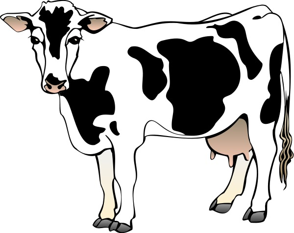
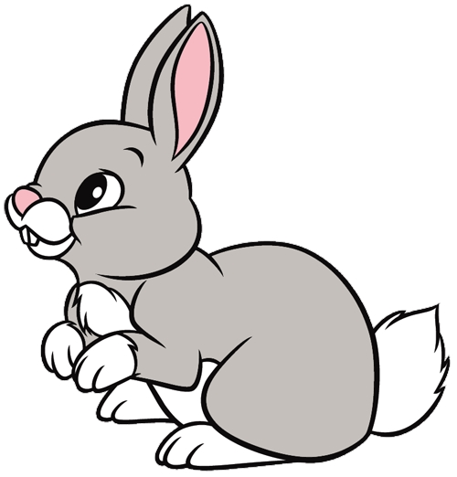

<!DOCTYPE html>
<html>
	<head>
    	<title>Demo</title>
    	<link rel="stylesheet" href="styles.css">
    	<script src="jspsych/jspsych.js"></script>
    	<script src="jspsych/dist/plugin-html-keyboard-response.js"></script>
    	<script src="jspsych/dist/plugin-preload.js"></script>
    	<script src="jspsych/dist/plugin-html-audio-response.js"></script>
		<script src="jspsych/dist/plugin-image-button-response.js"></script>
		<script src="jspsych/dist/plugin-html-button-response.js"></script>
		<script src="jspsych/dist/plugin-audio-button-response.js"></script>
		<script src="jspsych/dist/jspsych-instructions.js"></script>
		<script src="jspsych/dist/jspsych-call-function.js"></script>
		<script src="jspsych/dist/plugin-initialize-microphone.js"></script>
		<script src="jatos.js"></script>
	</head>
	<style>
		img {
  		width: 225px;
  		height: auto;
		}      
		/* .grid-container {
        	display: grid;
        	grid-template-columns: 1;
        	grid-template-rows: 1;
      	}
      	.grid-container > div {
        	margin: 40px;
      	} */
		#jspsych-audio-button-response-btngroup { 
            margin-bottom: 200px;
        }
	</style>
	<body>
		<!-- <div class="container">
		</div>
		<div id="imagesContainer" class="images-grid" style="display: none;"> 
		</div> -->
	</body>

	<script>
	
	function startExperiment() {

		jsPsychInstance = initJsPsych({
        override_safe_mode: true
    	});

		var timeline = [];

		var images = ['components/pictures/karve.jpg', 'components/pictures/kiskis.jpg', 'components/pictures/knyga.jpg', 'components/pictures/medis.jpg',
				'components/pictures/meska.jpg', 'components/pictures/namas.jpg', 'components/pictures/raktas.jpg', 'components/pictures/tigras.jpg',
				'components/pictures/tortas.jpg', 'components/pictures/vista.jpg', 'components/pictures/voras.jpg', 'components/pictures/klounas.jpg'];
		var audio = ['components/audio_files/F1_karve.wav', 'components/audio_files/F1_kiskis.wav', 'components/audio_files/F1_knyga.wav', 'components/audio_files/F1_medis.wav',
				'components/audio_files/F1_meska.wav', 'components/audio_files/F1_namas.wav', 'components/audio_files/F1_raktas.wav', 'components/audio_files/F1_tigras.wav',
				'components/audio_files/F1_tortas.wav','components/audio_files/F1_vista.wav', 'components/audio_files/F1_voras.wav'];

		// var button_locations = 
		// 	['',
		// 	''
		// ];

		var imageLocations = {
		  pos1: [50, 250],
		  pos2: [250, 250],
		  pos3: [450, 250],
		  pos4: [650, 250],
		  pos5: [50, 450],
		  pos6: [250, 450],
		  pos7: [450, 450],
		  pos8: [650, 450],
	  };
		
// these array can be passed into the preload plugin using the images, audio 
// and video parameters
		var preload = {
    		type: jsPsychPreload,
    		images: images,
    		audio: audio,
		};

		jsPsychInstance.run(preload);	

		var welcome = {
			type: jsPsychHtmlKeyboardResponse,
			stimulus: "Welcome to the experiment, press any key to continue",
			data: { image_type: 'A' }
		};
		timeline.push(welcome)

		// var instructions = {
   		// 	 type: jsPsychInstructions,
    	// 	pages: [
    	// 	'Welcome to the first test phase. Click next to begin.',
    	// 	'You will be seeing a picture on the screen, and your job is to name the picture using the word you learned during the experiment',
		// 	'First, you will see one picture. Take a second to think about what the picture is called',
    	// 	'Once you are ready, click the "Record" button',
		// 	'The picture will change to one with a border, at which point you should speak the word for the picture',
		// 	'Once you are done, press "Stop" and move on to the next image',
		// 	'You will need to initiatilize your microphone to allow us to record your responses on the next screen'
    	// 	],
    	// 	show_clickable_nav: true
		// };
		// timeline.push(instructions)


		var audioFiles = [
        	{item: 'components/audio_files/F5_karve.wav', label: 'karve', data: {file: 'karve.wav'}},
        	{item: 'components/audio_files/F5_kiskis.wav', label: 'kiskis', data: {file: 'karve.wav'}},
        	{item: 'components/audio_files/F5_knyga.wav', label: 'knyga', data: {file: 'karve.wav'}},
        	{item: 'components/audio_files/F5_medis.wav', label: 'medis', data: {file: 'karve.wav'}},
        	{item: 'components/audio_files/F5_meska.wav',label: 'meska', data: {file: 'karve.wav'}},
        	{item: 'components/audio_files/F5_namas.wav', label: 'namas', data: {file: 'karve.wav'}},
        	{item: 'components/audio_files/F5_raktas.wav', label: 'raktas', data: {file: 'karve.wav'}},
        	{item: 'components/audio_files/F5_tigras.wav', label: 'tigras', data: {file: 'karve.wav'}},
        	{item: 'components/audio_files/F5_tortas.wav', label: 'tortas', data: {file: 'karve.wav'}},
        	{item: 'components/audio_files/F5_vista.wav', label: 'vista', data: {file: 'karve.wav'}},
        	{item: 'components/audio_files/F5_voras.wav', label: 'voras', data: {file: 'karve.wav'}},
        	{item: 'components/audio_files/M5_karve.wav', label: 'karve', data: {file: 'karve.wav'}},
        	{item: 'components/audio_files/M5_kiskis.wav', label: 'kiskis', data: {file: 'karve.wav'}},
        	{item: 'components/audio_files/M5_knyga.wav', label: 'knyga', data: {file: 'karve.wav'}},
        	{item: 'components/audio_files/M5_medis.wav', label: 'medis', data: {file: 'karve.wav'}},
        	{item: 'components/audio_files/M5_meska.wav', label: 'meska', data: {file: 'karve.wav'}},
        	{item: 'components/audio_files/M5_namas.wav', label: 'namas', data: {file: 'karve.wav'}},
        	{item: 'components/audio_files/M5_raktas.wav', label: 'raktas', data: {file: 'karve.wav'}},
        	{item: 'components/audio_files/M5_tigras.wav', label: 'tigras', data: {file: 'karve.wav'}},
        	{item: 'components/audio_files/M5_tortas.wav', label: 'tortas', data: {file: 'karve.wav'}},
       		{item: 'components/audio_files/M5_vista.wav', label: 'vista', data: {file: 'karve.wav'}},
       		{item: 'components/audio_files/M5_voras.wav', label: 'voras', data: {file: 'karve.wav'}},
    	];

		// var comp_trial_prep = {
   		// 	type: jsPsychHtmlButtonResponse,
		// 	stimulus: function(){
        //          var html = `
		// 		 
        //             <p>${jsPsychInstance.timelineVariable('block')}</p>`;`</p>`;
        //     return html;
        //     },
    	// 	choices: ['Next'],
    	// 	prompt: "<p>Click on the 'Next' button to continue to the next trial.</p>",
		// };

		//var stimButton = '<div class="grid-container"><div></div></div>';

		var comp_trial = {
    			type: jsPsychAudioButtonResponse,
				stimulus: jsPsych.timelineVariable('stim'),
				// stimulus: function(){
                //   var html = '<dic class = "container">';
				// 	html += '<div class="item">';
				//   <audio>
  				//   <source src="${jsPsychInstance.timelineVariable('item')}" type="audio/wav">`;`</p>`;
            	//   return html;
            	// },
				choices: ['components/pictures/karve.jpg', 'components/pictures/kiskis.jpg'],
    			//choices: ['components/pictures/karve.jpg', 'components/pictures/kiskis.jpg', 'components/pictures/knyga.jpg', 'components/pictures/medis.jpg',
				//'components/pictures/meska.jpg', 'components/pictures/namas.jpg', 'components/pictures/raktas.jpg', 'components/pictures/tigras.jpg',
				//'components/pictures/tortas.jpg', 'components/pictures/vista.jpg', 'components/pictures/voras.jpg', 'components/pictures/klounas.jpg'],
    			prompt: "<p>Click on the image that matches the word you just heard</p>",
    			button_html: '<button class="jspsych-btn"></button>',
				button_html: 
				['',
			''],
				// timeline: [
				// {stimulus: 'components/audio_files/F1_karve.wav'},
				// {stimulus: 'components/audio_files/F1_kiskis.wav'},
				// {stimulus: 'components/audio_files/F1_knyga.wav'}
				// //randomize_order: true
				// ],
				on_finish: function() {
					jatos.appendResultData()
				},
				on_timeline_finish: function() {
        		var resultData = jsPsychInstance.data.get().csv();
				jatos.endStudy(resultData);
    		}
		};

		timeline.push(comp_trial)

		// var comprehension_procedure = {
		// 	timeline: [comp_trial],
		// 	timeline_variables: audioFiles,
		// 	randomize_order:true,
		// 	on_timeline_finish: function() {
		// 		var resultData = jsPsychInstance.data.get().csv();
		// 		jatos.endStudy(resultData);
		// 	}
		// };

		// timeline.push(comprehension_procedure)


		jatos.onLoad(function() {
			subjectID = jatos.studyResultId;
			jsPsychInstance.run(timeline);
		});
	}

	document.addEventListener('DOMContentLoaded', startExperiment)
    
	</script>

</html>